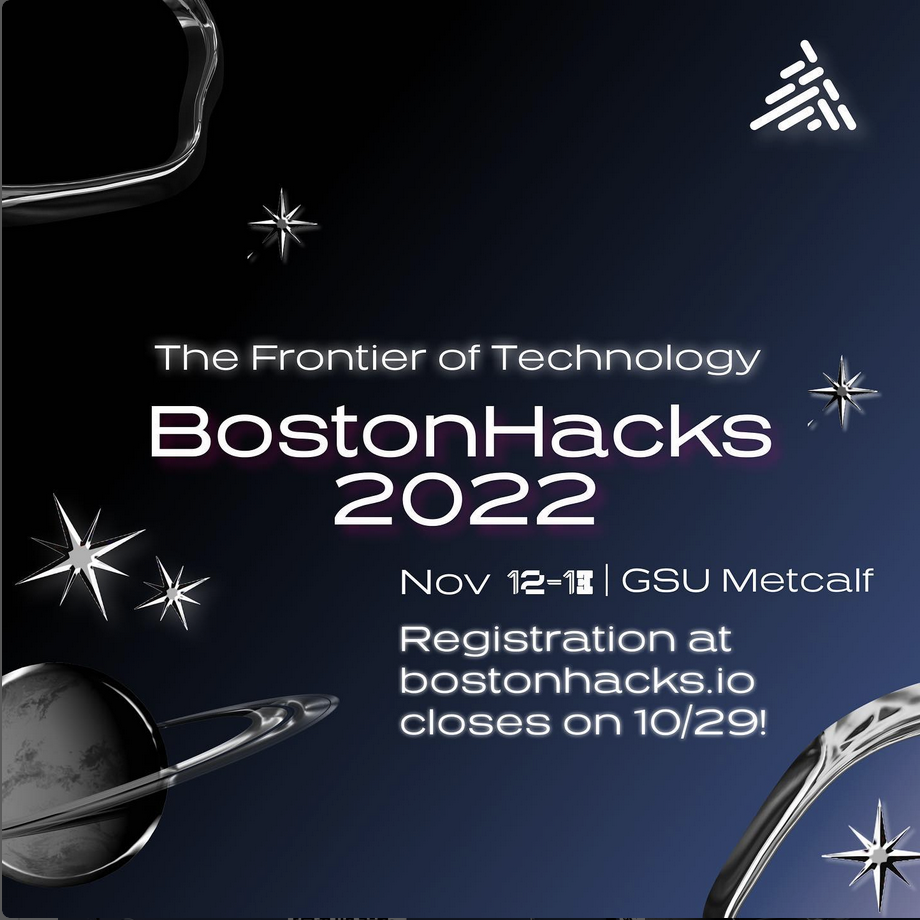
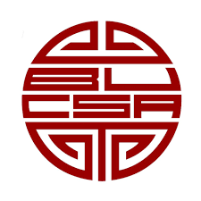

Design Head | BostonHacks
Boston, MA | Jan 2023 – Present
- Led design team, established branding, merchandise, and promotional graphics for BostonHacks 2025, 2024, and 2023.
- Fostered cross-team collaboration by maintaining clear communication with Directors and four other teams comprising 50+ members.

GD Chair, PR Chair, Upperclassmen Advisor | Chinese Student Association
Boston, MA | Dec 2022 – Present
- Directed design and public relations strategies, producing digital assets and managing event branding using Figma, Procreate, and Adobe Creative Suite.
- Organized 10+ cultural and networking events, promoting Chinese heritage and engagement among 150+ members.
- Mentored underclassmen by establishing a mentor/mentee program and facilitating bonding events amongst 20+ e-board members.